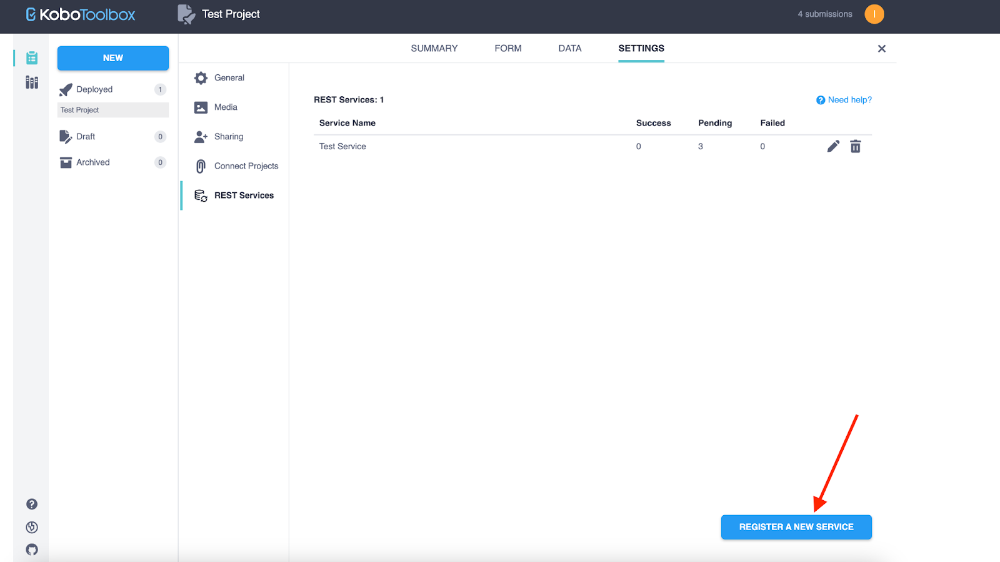

Search the knowledge base, browse our resources, and visit our forum for more detailed information
Last updated: 3 May 2024
This article outlines the early release of the integration between KoboToolbox and Monday.com. As with any new release, there may be some unexpected bugs. If you encounter issues, please contact us immediately so we can address them. ⚠️ We recommend rigorous testing before deploying this integration for mission-critical projects. ⚠️
The KoboToolbox integration allows users to easily synchronize their project data from a KoboToolbox project to a monday.com board.
In just a few steps you can set up the integration to automatically copy data submissions received in KoboToolbox to any of your monday.com boards. This integration significantly reduces the manual work involved in copying and pasting project data from KoboToolbox to monday.com.
Simplified process of connecting KoboToolbox projects with monday.com boards.
Easy mapping of monday.com fields to KoboToolbox questions using any label language defined in the form.
Real-time synchronization of newly created submissions to create new items.
Create an account on KoboToolbox if you don’t already have one. Learn more about creating an account.
Prepare a monday.com board mirroring the structure of your KoboToolbox project so that all fields from your KoboToolbox project are represented on a monday.com board.
During the integration set up, you will need to authenticate access to your account by providing your KoboToolbox API key. Learn how to get your API Key.
**Note:** The API Key is a unique identifier used for authentication. In KoboToolbox, it is referred to as your **API Key**. In monday.com, it is referred to as your **API token**.
Install the KoboToolbox integration from the monday.com apps marketplace.
Once installed, go to your previously prepared board to set up the integration.
**Note 1:** Only one KoboToolbox integration recipe can be established per monday board. **Note 2:** Only the person who installed the recipe can edit it, all other board members can only open it in read-only mode.
Go to the Integration menu on the top right.

Find KoboToolbox in the Integrations Center.

Click on the KoboToolbox integration and choose the included recipe.

Authorize the KoboToolbox app:
Enter the URL of the KoboToolbox server where you created your account. For the Global KoboToolbox Server, use the server URL https://kf.kobotoolbox.org. For the European Union KoboToolbox Server, use the server URL https://eu.kobotoolbox.org.
Enter your KoboToolbox API Key in the “Kobo API token” field

**Note:** In order to change the API Key after the integration recipe is set up, the KoboToolbox integration app should be completely reinstalled.
For recipe configuration, set up the following parameters:
Choose the appropriate KoboToolbox project that you want to connect to your monday.com board from the drop-down menu. Only deployed projects are available for selection.
Choose the label language from the drop-down menu. If your form contains more than one language, select the language that should be used to map questions to columns. The selected language will only be displayed to map KoboToolbox questions with monday.com columns. The data displayed in the monday.com board will always use the underlying XML data structure instead of translated Select One or Select Multiple labels.
Click Item to set up the mapping of questions to columns.

When you have completed the recipe configuration, click the Add to Board
button. 
After completing the integration set up, you must configure REST Services on KoboToolbox in order to automatically synchronize your project data with the monday.com board. To configure REST Services on KoboToolbox:
Copy the integration link from the integration set up notification or from the
description on your monday.com board.

Sign in to your KoboToolbox account.
Go to the project you wish to connect. Open the SETTINGS tab, then choose REST
Services, and click on the REGISTER A NEW SERVICE button.

Enter “monday.com integration” as the service name and enter the integration link in the “Endpoint URL” field.
In the “Custom HTTP Headers” section, insert the value “webhook-auth” in
the “Name” field and enter your KoboToolbox API Key in the “Value” field.

Click the SAVE button.
You’re all set! Each new submission to your KoboToolbox project will automatically be added to your monday.com board according to your recipe configuration.\

Any updates made to a form or individual submission in a KoboToolbox project which has already been added to your monday.com board will not be automatically updated on your monday.com board. Changes like removing or renaming a question, changing a group hierarchy, changing a group to a repeat group, or editing labels in the KoboToolbox form will not affect the items on your monday.com board.
Location is not automatically supported in the dynamic fields mapping. To transfer a location or coordinates from Kobotoolbox into a monday.com column:
Create two columns on your monday.com board for location data to be populated: one column that is a Text type and a second column that is a Location type. It’s important to name them identically.
In the dynamic fields mapping, map the KoboToolbox location into the monday.com Text type column. - The Location type column will not appear in the dynamic mapping.
The KoboToolbox location submission will automatically be populated into the monday.com Location type column.
File column is not automatically supported in the dynamic fields mapping. To transfer files from KoboToolbox to monday.com:
Add a File column to the monday.com board and give it the same name as the name used for the File field in your KoboToolbox project. The same file column name must be used in both monday.com and KoboToolbox.
If you have not installed the integration recipe, complete the installation process. Once you have completed the installation, go to the Integrations Center, open the existing recipe, and click the Update automation button to have the latest functional changes applied.
No other configuration changes are needed. Files will now be automatically transferred from the KoboToolbox project to the appropriate column on your monday.com board based on the column name.
In order to ensure high performance in the monday.com boards, monday.com limits the number of columns per board: 200 columns for non-enterprise accounts and 300 columns for enterprise accounts.
What are the REST Services?
More information about REST Services is available in this support article.
What is dynamic fields mapping?
Dynamic fields mapping is a pairing of fields represented on the monday.com board with the appropriate questions from the KoboToolbox project.
What happens if I change my data on the Kobo account?
Any updates made to a form or individual submission in your KoboToolbox project which has already been sent to the monday.com board will not be automatically synchronized.
What happens if I change my data on the monday.com board?
Changes made to data represented on the monday.com board will not be reflected in the KoboToolbox project.
What happens if I need to later change the language?
Language selection affects only the dynamic fields mapping view of the integration recipe configuration. Board data will not be translated.
What happens if I delete the project on KoboToolbox?
If a project is deleted in KoboToolbox, the integration will no longer function until the integration recipe is updated with a new project.
What are “column types”?
A “column type” in monday.com is a question type in KoboToolbox.
What question types from KoboToolbox can be transferred to monday.com?
All question types except External XML are supported by monday.com. If you can’t find the appropriate column type on monday.com board, use a Text type column.
To transfer Point and Area question types in KoboToolbox to the Location column type on the monday.com board, use the approach described in Important Note #2. If it’s not crucial to have data transferred to the Location column, then a single Text type column can be used with no additions.
How do Select Many questions in KoboToolbox transfer to monday.com?
For Select Many questions, a Drop-down type column should be used on the monday.com board to have all selected options correctly transferred to the board.
How do Select One questions in KoboToolbox transfer to monday.com?
For Select One questions, use a Status (limited to 40 label options), Drop-down, or Text type column to have the selected option correctly transferred to the board.
Can I sync more than one KoboToolbox project with my monday board?
No. Only one KoboToolbox integration recipe can be established per board. Having more than one recipe will lead to a server error.
Why can’t I change a recipe created by another monday.com board member?
Only the board member who created the recipe can edit it. All other board members can only open it in read-only mode.
Did you find what you were looking for? Was the information clear? Was anything missing?
Share your feedback to help us improve this article!